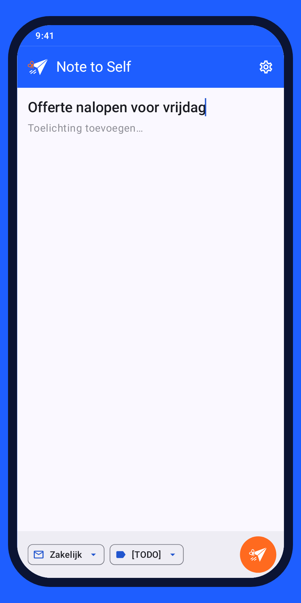
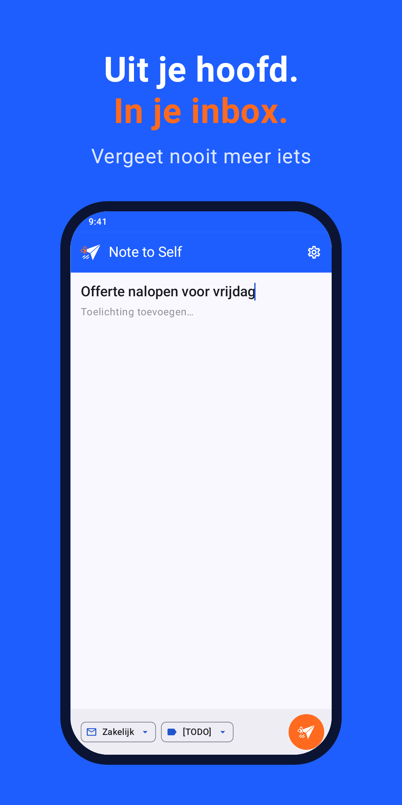
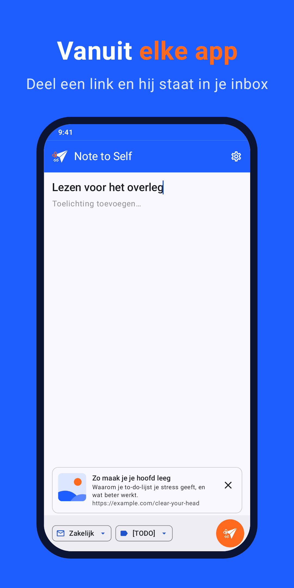
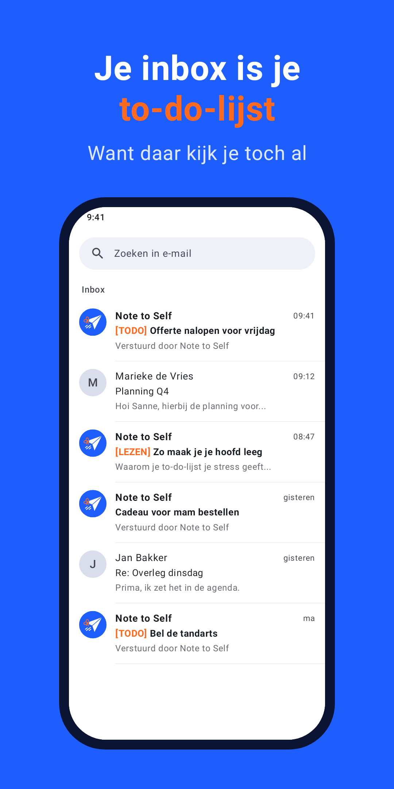

Uit je hoofd.
In je inbox.
Alles wat je moet doen komt al binnen in je inbox. Waarom zou je wat je zélf bedenkt ergens anders bewaren? Tik, typ, weg, en vergeet nooit meer iets.
Download op Google Play
Alles wat je moet doen komt al binnen in je inbox. Waarom zou je wat je zélf bedenkt ergens anders bewaren? Tik, typ, weg, en vergeet nooit meer iets.
Download op Google Play
Openen en je kunt meteen typen. De eerste regel wordt het onderwerp. Eén tik op verstuur en de app is weer weg.
Deel een artikel, link of foto via Delen → Note to Self. Titel en samenvatting van een link gaan automatisch mee.
Kies per notitie naar welke inbox hij gaat. Tags zoals [TODO] en [LEZEN] maken je inbox meteen overzichtelijk.
Geen bereik? Je notitie staat klaar en gaat vanzelf zodra je weer online bent.



Note to Self verstuurt via je eigen Gmail-account en vraagt alleen toestemming om te versturen; je mail lezen kan de app niet. Geen account bij ons, geen eigen servers, geen tracking, geen advertenties.
We horen graag hoe je Note to Self gebruikt en wat beter kan.
apps [apenstaartje] adiso.nl